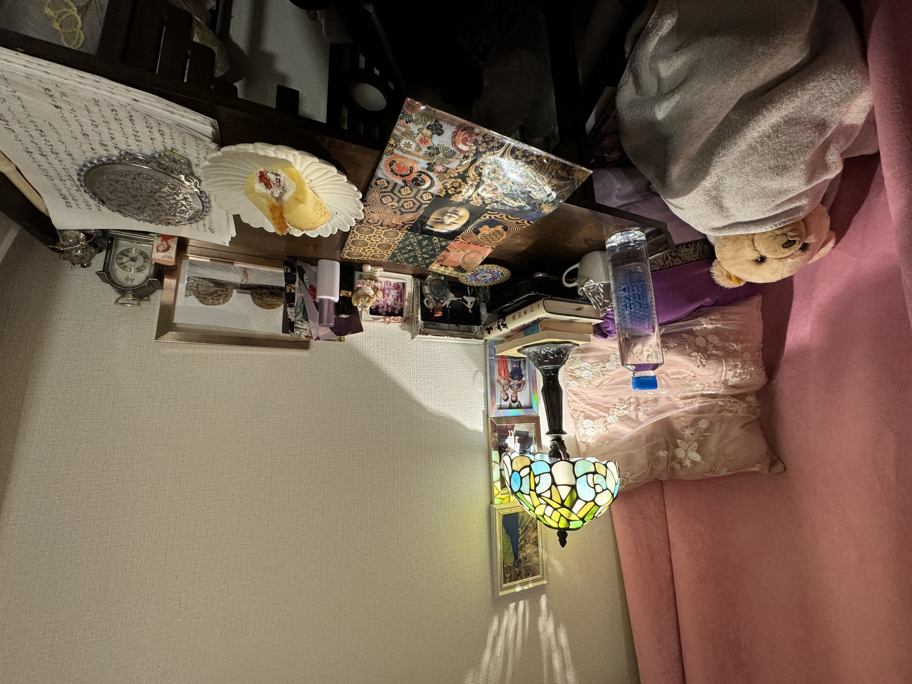

ウェブサイト運営方針のおはなしとか
私がウェブサイトを立てるのはこれが３回目で、厳密には４回目だ。一昨年あたりに一度ローカルにソースを溜めていたら、ハッキングされて全部潰されたのを含めたら４回目になる。（そんな状況下で”サボっている”呼ばわりをされるわけで、気が狂いかけた。5年前に撮ったミュージックビデオなんかも製作費5万円くらいが飛んだだけだったな。）
話すべき話を話すことが最初はメインの使い方になるのかな、という気がする。そのうちに、もっとおもしろい話を一緒におもしろがってもらえる場所になったら嬉しいと思った。
私が単に生きていると、生きているだけで、事件の方から勝手にやってくるのが私の巡り合わせらしいので話題は尽きない。
たぶん、盗撮カメラが私に仕掛けられているのが犯罪であることを知りながら、私を見ることがやめられなかった人々が何億人もいた。
読んでいるあなたはきっとその一人だと思う。
そうして、コンスタントには私を見られなくなった今、退屈している。そうでしょう？
私にもっと感謝をして、私をもっと大事にした方がいい。
私がインターネットと語り合うようになったのは、2014年だ。その頃からのファンもまだいっぱいいる。彼らは私に”捨てられた”のが気に食わなくて、追っかけてきてしまった。私が結婚しようとした時に。
その事を私は忘れられない。
そのことを忘れはしないけれども、一緒にいい時間を過ごした時もあった。そんな時に流れていたような時間が、このウェブサイトには流れたらいいな、と思っている。
びっこをひくような拙い始まり方をするけれども、温かい目で見守ってください。（そうして私に感謝してね、もっと！本当にもう！！）

（自宅書斎スペース。資格試験の早朝。）
← Back to Blog